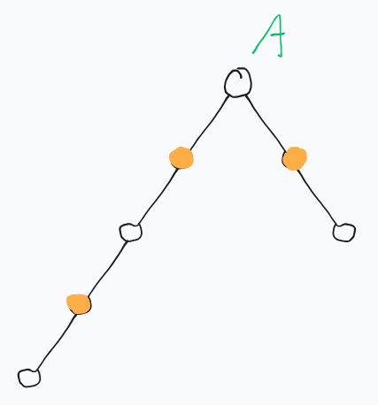

link 本题为原T2
山是 1∼n 的 排列 a，ai 表示位置 i 的高度。（“排列”保证了 ai 互不相同，这很重要）
游戏规则：
-
Alice 先选起点 x0 并告诉 Bob
-
Bob 再选起点 y0
-
两人轮流移动，Alice 先动
-
Alice 移动规则：选 x′ 满足 x′=y、∣x′−x∣=1、ax′<ax
-
Bob 移动规则：选 y′ 满足 y′=x、∣y′−y∣=1、ay′>ay
-
无法移动者输
求哪些 x0 能让 Alice 有必胜策略。
2≤n≤105
观察这道题，显然可以发现 A 不能在斜坡和“谷底”。
如果 A 在斜坡上，那么 B 可以直接选择堵在 A 的下面。如果 A 在谷底，那你动个头啊。
所以 A 一定在山顶，换句话说答案一定符合 ai>max(ai−1,ai+1)。
那么我们考虑当 A 在山顶时，B 部署到哪个位置有可能会使 A 走投无路。
考虑 A 所在的山，其左右两边到山谷的长度为 l 和 r。
现在 B 有两种选择：
-
不在 A 所在的山。令 B 不在 A 山所能找到的最长的斜坡长度为 h，B 会使 A 走投无路的条件为 h≥max(l,r)。
-
在 A 所在的山。
假如说 B 希望通过堵 A 的方式使 A 走投无路，那么 disA,B 需要是奇数。
（如果是偶数，AB 交替走，到 disA,B=2 时 A 先走一步，disA,B=1，把 B 给堵住了）

那么考虑一件事情：为了使 A 能逃跑的距离尽量短 & 使 B 能追杀的距离尽量长，B 应该选较长边的最远处。
确定了 B 所在的位置，然后考虑 A 的移动。A 自然是不会往 B 那个方向下的。
因此 A 选择往较短边下降。
参考上面，很容易得出 B 会使 A 走投无路的条件为 disA,B≥min(l,r)
然后就想完了。
考虑怎么维护。针对每一个位置对于上一个位置而言是向上还是向下，用 01 表示，以 1 为上，以 0 为下。
这样得到的是一个 01 序列。
维护一个位置 向左/向右 最长相同的长度。这个玩意代表了“以某个点 向左/向右 到顶/到底 所需要的距离”。就叫 lenl 和 lenr。
找到一个山顶 p，可以得出 l=lenlp,r=lenrp。这个山的左右边为 L=p−l,R=p+r。
B 不在 A 的山，那么：
h=max(1≤i≤Lmaxlenli,R≤i≤nmaxlenri,1≤i≤L−1maxlenri,R+1≤i≤nmaxlenli)
使用 rmq 维护。
B 在 A 的山很好写。
然后就做完了。复杂度 O(n+nlogn+n)。
1
2
3
4
5
6
7
8
9
10
11
12
13
14
15
16
17
18
19
20
21
22
23
24
| bool ok[maxn];
void solve(){
for(int i=1;i<=n;++i){
if(a[i]<max(a[i-1],a[i+1])) continue;
int l=lenl[i],r=lenr[i];
bool flag=1;
if(l>r){
int bp=(l%2==0)?(l-1):(l);
if(r<=bp) flag=0;
}
else{
int bp=(r%2==0)?(r-1):(r);
if(l<=bp) flag=0;
}
int amx=max(l,r);
int bmx=max(max(rmql(1,i-l),rmql(i+r+1,n)),max(rmqr(1,i-l-1),rmqr(i+r,n)));
if(amx<=bmx) flag=0;
if(flag) ok[i]=1;
}
}
|
sub